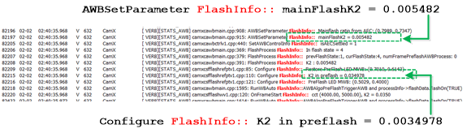
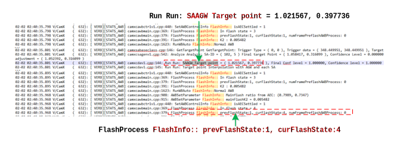

Retrieve flash sensitivity (K2) values to use for setting triggers. Retrieve MWB target
points required for tuning AWB flash modules.
Turn on verbose AWB log messsage
Retrieve K2 values for pre-flash and main
flash
-
From the AWB log, find log entries that have the keyword
FlashInfo:: to check the flash process.

-
Search for the phrase
K2 in preflash and
record the K2 value found in the log.
Save this pre-flash value to fine-tune K2 triggers for
Reference Point Shift Ratio and Flash Weight Vector.
-
Search for the phrase
mainFlashK2 and record
the K2 value found in the log.
Save this main flash value to fine-tune K2 triggers for
the Flash Decision and Flash Gain Adjust modules.
Retrieve MWB target points for
pre-flash
-
Capture a raw flash snapshot of a 100% FOV gray card.
-
From the AWB log, find a log entry with the phrase
FlashInfo:: prevFlashState:1, curFlashState:4.

-
Then find the most recent value for
SAAGW_Target point = that precedes the phrase in Step 4.
Save the target points to record in the Flash Reference
Points module.
Retrieve MWB target points for main
flash
-
Capture a raw flash snapshot of a 100% FOV gray card.
-
Measure the average R/G, B/G in the 20-30% center region of the
image.
Save the main flash MWB points to record in the Flash
Decision module.